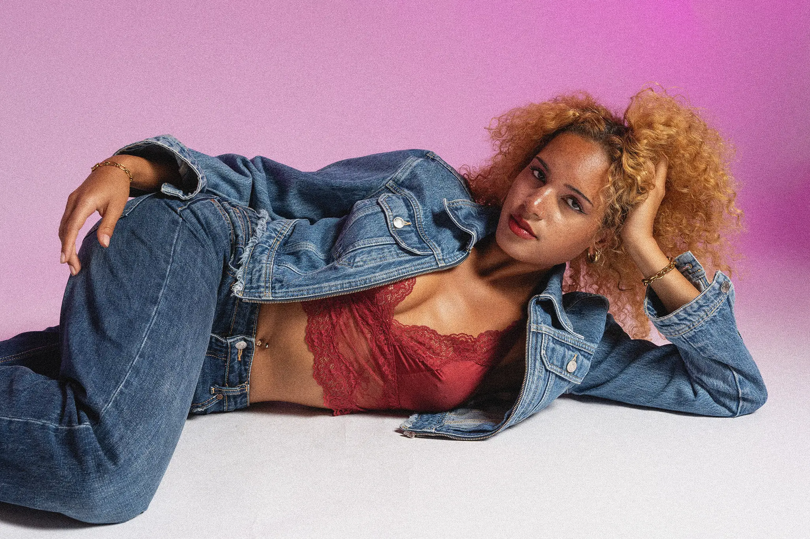
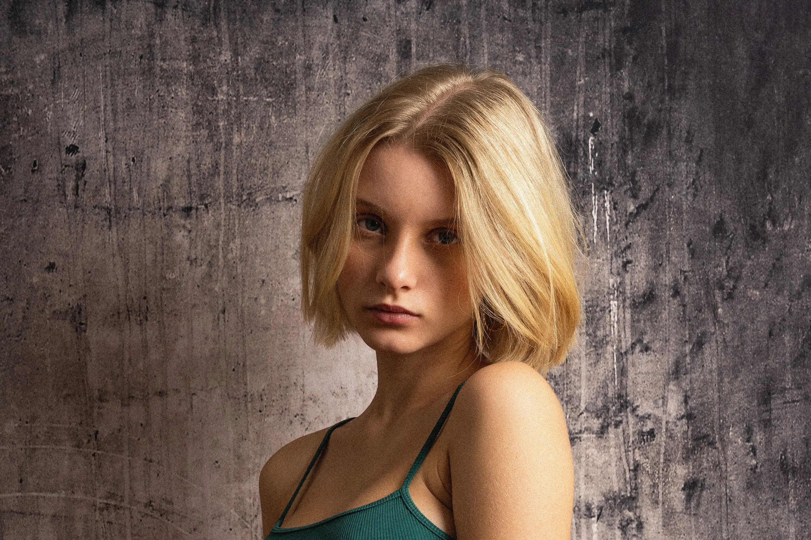
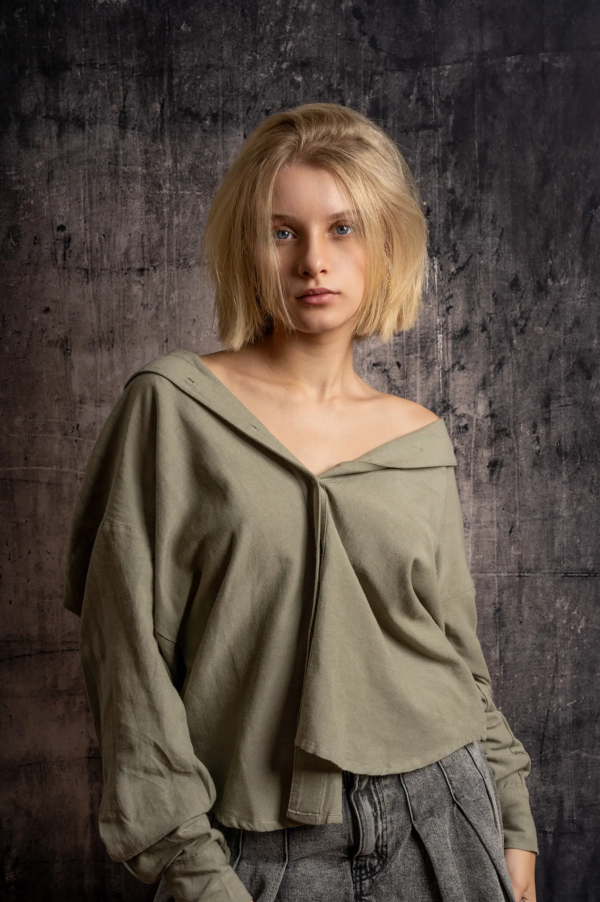
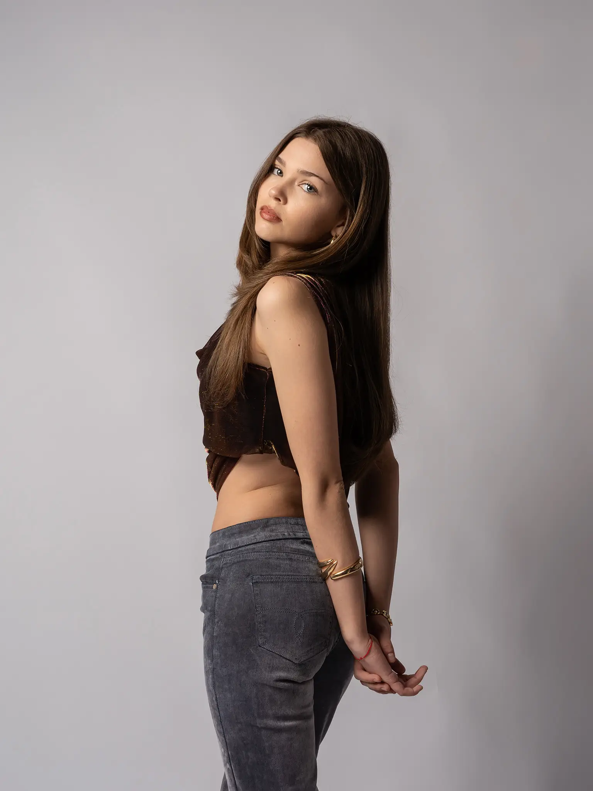
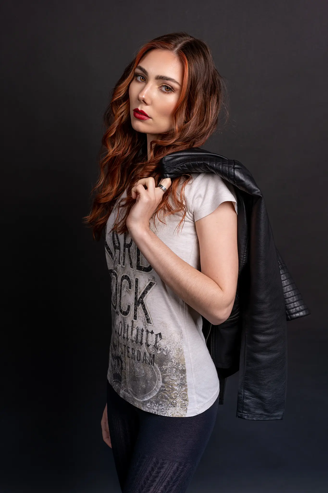
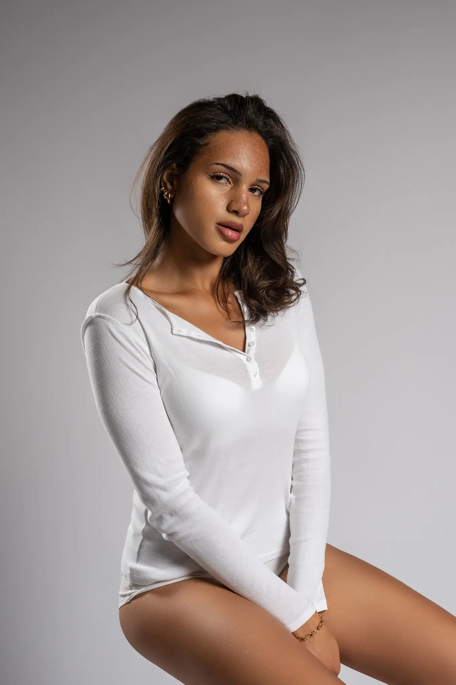

Womenzone
Adam Olendzki – Rottenburg an der Laaber & Landshut
Dein Moment. Dein Stil.
Dieser Teil meiner Website ist der Frauenfotografie gewidmet – ich bin mir sicher, dass Du hier etwas Inspirierendes und Faszinierendes finden wirst. Im Mittelpunkt steht die Schönheit, Feinheit und innere Stärke von Frauen, die sich auf ganz unterschiedliche Weise zeigen kann.
Ein Frauenfotoshooting ist eine wunderbare Gelegenheit, Deine Weiblichkeit hervorzuheben, neue Seiten an Dir zu entdecken und den Moment zu genießen, in dem Du im Mittelpunkt stehst.

Dein Stil. Dein Ausdruck. Dein Moment.
Mal klar und reduziert, mal mit modischem Twist, mal einfach nur Du in Deinem Alltag. Diese Kategorie zeigt, wie viele Seiten ein Gesicht, eine Haltung, ein Moment haben kann – kein starres Konzept, sondern Bilder, die sich an Dich anpassen, nicht umgekehrt.
Portfolio ansehen
Weiblichkeit, wie Du sie fühlst
Sensual-Fotografie ist kein lautes Statement, sondern ein leiser, sehr persönlicher Moment – für Dich allein. Es geht nicht darum, etwas zu zeigen, sondern darum, Dich selbst neu zu sehen: kraftvoll, weich, ungestellt. Diskret, respektvoll und ganz in Deinem Tempo.
Portfolio ansehen
Fürs Business gemacht
Klare, professionelle Aufnahmen für Modelmappen, Agenturen und Castings – mehrere Looks, unterschiedliche Perspektiven, sofort einsatzbereit.
Mehr erfahrenSedcard & Polaroids: Zeig Dich, wie Du bist
Ein starkes Portfolio ist der Schlüssel im Modelbusiness. Neben kreativen Editorials und High-Fashion-Strecken sind es vor allem die unretuschierten, echten Aufnahmen, die über Jobs entscheiden.
In meinem Studio in Rottenburg an der Laaber kreieren wir professionelle Sedcard-Ergänzungen, ausdrucksstarke Model-Tests und cleane Polaroids (Digitals). Ich lege großen Wert auf ein präzises Lichtsetup, das Deine Facetten, Deine Körperlinien und Deine natürliche Ausstrahlung perfekt betont – ohne ablenkende Effekte oder schweren Retusche-Overkill.
Lass uns Deine Modelmappe auf das nächste Level bringen.




Frauenfotografie in der Region Landshut und München
Als Fotograf für Frauenfotografie – Portrait, Fashion, Lifestyle, Sensual und Sedcards – bin ich vor allem in Rottenburg an der Laaber und im gesamten Landkreis Landshut unterwegs. Auch in Regensburg, Mainburg, Kelheim, Abensberg und München entstehen bei mir natürliche, moderne und stilvolle Frauenportraits, Beauty-Shootings und professionelle Sedcards für Modelmappen.
“Elegance is the only beauty that never fades.”
Audrey Hepburn